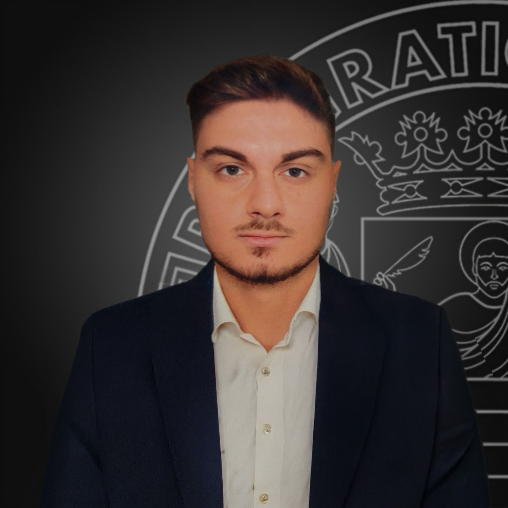
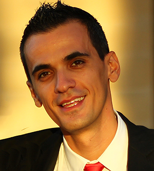
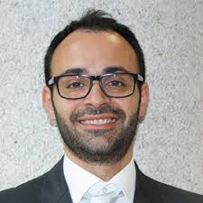
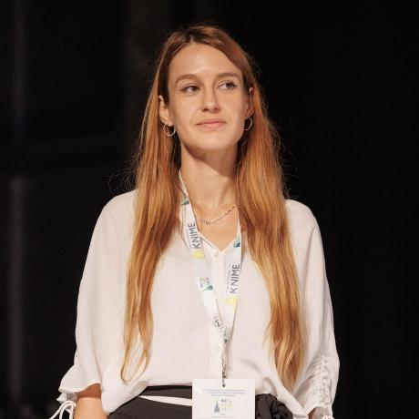
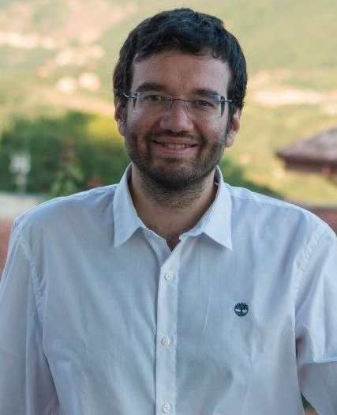
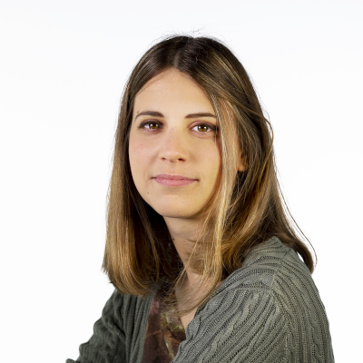

Security, Human Awareness, and Risk Mitigation in AI-driven Systems
SHIELD-AI 2026 is an interdisciplinary workshop on AI risk management, human–AI interaction,
and human-centered cybersecurity in adversarial and security-critical environments.
Held within ECML PKDD 2026
7–11 September 2026 · Naples, Italy
About the workshop
Artificial Intelligence systems are increasingly integrated into everyday applications, digital infrastructures, and security-critical environments. While these systems offer significant benefits, they also introduce systemic risks related to technical vulnerabilities, algorithmic bias, integration issues in complex systems, and the dynamics of human–AI interaction.
The workshop is held within ECML PKDD 2026 — the European Conference on Machine Learning and Principles and Practice of Knowledge Discovery in Databases — taking place in Naples, Italy, from 7 to 11 September 2026.
At the same time, modern cyber threats have shifted toward the cognitive domain, exploiting human behavior, social dynamics, and large-scale information ecosystems. Social cyber attacks such as phishing, social engineering, and disinformation campaigns manipulate trust mechanisms, cognitive biases, and online communication patterns.
SHIELD-AI 2026 provides an interdisciplinary forum that brings together researchers and practitioners from machine learning, knowledge discovery, cybersecurity, and human-centered computing. The workshop aims to advance methods for identifying, modeling, and mitigating risks in AI-enabled socio-technical systems operating in adversarial and human-critical environments.
Important dates
5 June 2026
Paper Submission
1 July 2026
Paper Acceptance
10 July 2026
Camera-ready Papers
Half-day event
Workshop format
Topics of interest
- Risk identification and modeling in AI-driven systems and multi-component ecosystems.
- Human–AI interaction risks, trust, overreliance, and decision-making under automation.
- Human-centered cybersecurity and social cyber attacks, including phishing, social engineering, and disinformation.
- Machine learning and knowledge discovery for cyber threat detection on large-scale heterogeneous data.
- Natural language processing and large language models for malicious or manipulative content analysis.
- Graph learning and knowledge graphs for social networks, communication patterns, and cyber threat ecosystems.
- Bias, robustness, uncertainty, and adversarial machine learning in human-critical settings.
- Explainable and trustworthy AI for security-critical applications.
- Generative AI for both cyber attacks and defensive analysis.
- Runtime monitoring, continual risk assessment, and adaptive mitigation strategies.
- Human behavioral and psychophysiological data analysis.
- Privacy, data protection, cyber threat intelligence, and knowledge sharing.
- Human-in-the-loop and reasoning-based methods for dynamic risk assessment and explanation.
- Case studies and empirical evaluations in real-world deployments.
Submission guidelines
Papers must be written in English and formatted in LaTeX following the Springer LNCS author kit. The maximum length is 16 pages including references. Over-length papers will be rejected without review.
Up to 10 MB of additional material may be uploaded with the submission. Appendices should be submitted separately, and the main paper must remain self-contained within the page limit.
SHIELD-AI 2026 welcomes regular research papers, survey articles, mature work, recent research contributions, preliminary exploratory work, and industry experience or case-study papers. Submissions must be original and not under review elsewhere.
All submissions should be made in PDF via Microsoft CMT and must adhere to the Springer LNCS style. At least one author of each accepted paper must register and present the paper in person in Naples.
The workshop papers may be included in a joint post-workshop proceeding published by Springer Communications in Computer and Information Science (CCIS), with authors able to opt in or out.
How to submit
- Open the submission link here
- Click on "Create New Submission" and select SHIELD-AI 2026 from the list of workshops.
- Fill in the required submission information and upload your manuscript.
Invited Speakers
TBD

Gaetano Cimino
Assistant ProfessorUniversity of Salerno, Italygcimino@unisa.it
Stefano Cirillo
Assistant Professor (Tenure Track)University of Salerno, Italyscirillo@unisa.itMiriana Calvano
PhD StudentUniversity of Bari Aldo Moro, Italymiriana.calvano@uniba.it
Giuseppe Desolda
Associate ProfessorUniversity of Bari Aldo Moro, Italygiuseppe.desolda@uniba.itIdio Guarino
Assistant ProfessorUniversity of Bologna, Italyidio.guarino@unibo.it
Pantaleone Nespoli
Postdoctoral ResearcherUniversity of Murcia, Spainpantaleone.nespoli@um.es
Eliana Pastor
Assistant ProfessorPolytechnic University of Turin, Italyeliana.pastor@polito.itGaetano Perrone
Assistant ProfessorUniversity of Naples Federico II, Italygaetano.perrone@unina.itRoberta Presta
Assistant ProfessorUniversità degli Studi Suor Orsola Benincasa, Napoli, Italyroberta.presta@unisob.it
Giancarlo Sperlí
Associate ProfessorUniversity of Naples Federico II, Italygiancarlo.sperli@unina.it
Serena Tardelli
ResearcherIIT-CNR, Pisa, Italyserena.tardelli@iit.cnr.itProgram Committee
- Dr. Alessandro Pagano, Consiglio Nazionale delle Ricerche (CNR), Italy
- Prof. Ana M. Bernardos, Universidad Politécnica de Madrid, Spain
- Dr. Andrea Esposito, University of Bari Aldo Moro, Italy
- Dr. Andrea Vignali, University of Naples Federico II, Italy
- Dr. Antonio Curci, University of Bari Aldo Moro, Italy
- Prof. Benjamin Negrevergne, PSL – Paris Dauphine, France
- Dr. Benedetta Tessa, University of Pisa, Italy
- Prof. Carlotta Domeniconi, George Mason University, US
- Prof. Christoph Heitz, Zurich University of Applied Sciences, Switzerland
- Dr. Chuyuan Li, University of British Columbia, Canada
- Prof. Constantinos Halkiopoulos, University of Patras
- Prof. Daniel Leightley, University of California Berkeley
- Dr. Daniel Orlando Díaz López, Universidad del Rosario, Spain
- Prof. Dimitar Trajanov, Boston University
- Prof. Ece Calikus, Uppsala University, Sweden
- Prof. Elisa Bassignana, IT University of Copenhagen
- Prof. Emmanouil Vasilomanolakis, Technical University of Denmark, Denmark
- Dr. Flavio Cirillo, NEC Laboratories EU, Germany
- Prof. Flavio Giobergia, Polytechnic University of Turin
- Prof. Félix Gómez Mármol, University of Murcia, Spain
- Dr. Francesco Cerasuolo, University of Naples Federico II, Italy
- Prof. Gianluca Bonifazi, Marche Polytechnic University
- Dr. Georgios Kambourakis, University of the Aegean, Greece
- Prof. Gizem Gezici, Scuola Normale Superiore, Italy
- Prof. Gregorio Martínez Pérez, University of Murcia, Spain
- Prof. Haoran Xie, Lingnan University
- Prof. Ibidun Christiana Obagbuwa, Walter Sisulu University
- Prof. Izabela Rojek, Kazimierz Wielki University
- Prof. Joaquín Garcia Alfaro, Telecom SudParis, France
- Prof. Lip Yee Por, Universiti Malaya
- Dr. Lorenzo Alvisi, IMT School for Advanced Studies Lucca, Italy
- Prof. Luca Virgili, Marche Polytechnic University
- Prof. Mamoona Humayun, Roehampton University
- Prof. Manuel Gil Perez, University of Murcia, Spain
- Dr. Marco Antonio Sotelo Monge, Indra, Spain
- Dr. Martino Ciaperoni, Scuola Normale Superiore, Italy
- Prof. Maurizio Atzori, University of Cagliari, Italy
- Prof. Mina Tadros, University of Strathclyde
- Dr. Mir Rayat Imtiaz Hossain, University of British Columbia, Canada
- Prof. Mohammad Rashed Altimania, University of Tabuk
- Prof. Mohammed I. Al-Rayif, King Saud University
- Prof. Mohamed Siala, INSA Toulouse & LAAS-CNRS, France
- Prof. Olga C. Santos, Universidad Nacional de Educación a Distancia (UNED)
- Prof. Osvaldo Gervasi, University of Perugia
- Dr. Roberto Bifulco, NEC Laboratories EU, Germany
- Prof. Paolo Bottoni, Sapienza University Rome
- Prof. Paulo Bruno Serafim, Gran Sasso Science Institute, Italy
- Prof. Romain Vuillemot, École centrale de Lyon, France
- Prof. Sajid Anwar, Institute of Management Sciences, Peshawar
- Prof. Sara Colantonio, ISTI-CNR, Italy
- Prof. Savvina Daniil, Centrum Wiskunde & Informatica (CWI), Netherlands
- Prof. Shaina Raza, Vector Institute for Artificial Intelligence
- Prof. Shweta Mahajan, York University, Canada
- Prof. Vagelis Plevris, Qatar University
- Dr. Virginia R. Coletta, Consiglio Nazionale delle Ricerche (CNR)
- Prof. Weiwei Jiang, Beijing University of Posts and Telecommunications, China
- Prof. Zichong Wang, Florida International University, US